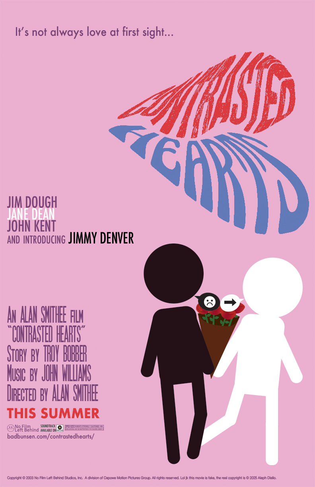
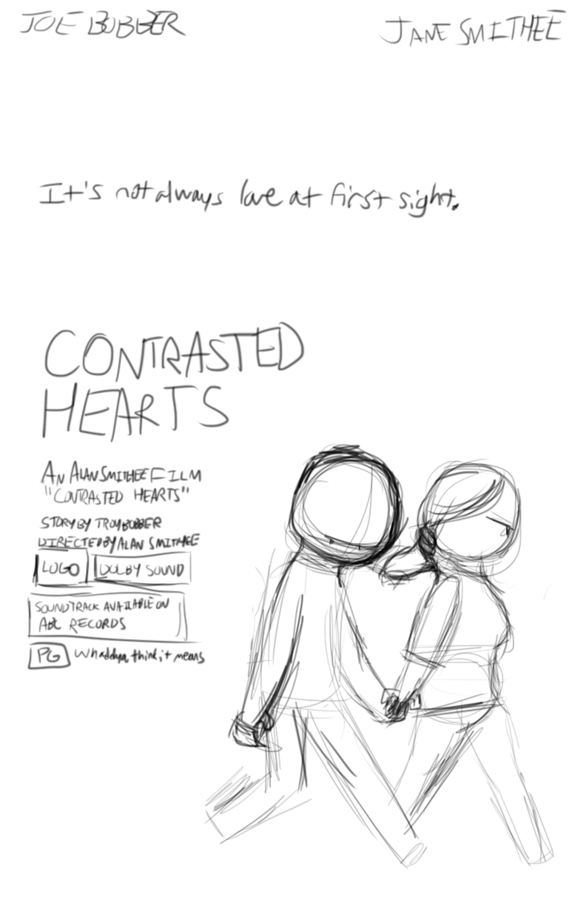

(20% size)
For someone who doesn't really like romance films, I had a lot of fun making this faux romance poster from the early 2000s. The idea of hiding a heart and making them two bitter stickfigures at first came way early, but how to go about doing it was a little harder. I wanted to make it clear that it was a heart without making it super obvious, so I used a bouquet of roses, later deciding it wasn't enough and decided to add speech bubbles. Both were done in Illustrator and brought over to Photoshop. From what I could remember we weren't allowed to use any real movie logos, so I went back to the archives and chose an old, generic logo I made for a fake company in 2022 called "No Film Left Behind". I slapped on some credits, added the era-accurate PG-13 rating and it was done. For good measure, I also made a 24x36 version, although I've recently learned that the actual size for movie posters is 27x40. Groovy.
Older artist statement
The Contrasted Hearts movie poster was fun to make and finish. I first started off with the thumbnail, a very rudimentary sketch that somewhat resembles the final product. The title was originally "Empathetic Movie", in the vein of films like Scary Movie, but after some criticism and a look back at what I wrote for the project—two workers who hate each other at first thanks to their differences, but after a job they slowly start to enjoy each other's company—I ended up with the name Contrasted Hearts and even made a little split heart for a logo. After finishing the comp, I was able to create a more compelling design with Adobe Illustrator where, instead of two infographics simply holding hands with each other, one of them is holding a bouquet of flowers, and they're both having a little argument that's boiled down to simple arrows and symbols. The bouquet and the speech bubbles both form a heart, further adding to the romance theme. The color palette was relatively a breeze; the background is pink, text is purple, and the two figures are in black and white. When moving on to the more fascinating info—fascinating by Aleph standards—I hit a bit of a brick wall: I couldn't use real logos. So I thought real hard and remembered my old Dream Logos Wiki days. I grabbed the "No Film Left Behind" logo I made all the way back in 2022 and also made a fake record label that would've sold the soundtrack to the film, featuring all of the hit pop and R&B singers from 2002. Speaking of 2002, I ended up giving this film a 2003 release date after I realized that it was very hard to simply find a vector version of a PG-13 logo with information of the film's contents. I think the one they have now where they just have the rating and nothing else would have sufficed, but I believe that without this revelation I wouldn't have come up with a neat Instagram Reels variant where it's advertising the film's 20th anniversary screening. Limitations really do promote creativity. A couple of fonts I used include DCC Ash and Excalibur Nouveau for the logo, Futura for non-credits text, and SC Movie Poster for a portion of credits. Finally, I added an URL that redirects to my website, added a release date, copyright info, and saved the PSD in a 11x17 in. 72 dpi format. I also modified the poster to exactly fit the standard 24x36 in. 300 dpi format posters usually have (simply for realism's sake) and made a YouTube thumbnail for the original trailer. In short, it's a romance poster made in Photoshop and Illustrator where I set just enough limitations where I could still have fun making it.
Thumbnail
View/print the 24x36 poster (20 MB)